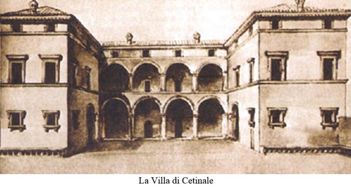

|
|
 |
18 giugno 1673
domenica
BRUCO
|
- prima di iniziare la lettura, si consiglia di leggere l'introduzione -
Quarto "Straordinario"1 nel giro di un decennio, in onore della famiglia Chigi, in questo caso del Cardinale Flavio, nipote di Papa Alessandro VII.
L'effettuazione di questo Palio, ignorato dall'Elenco Generale del Comune, è confermata da vari autori, della partecipazione dell'Onda2, ma soprattutto da un verbale dell'Oca che asserisce, senza però specificare il nome del fantino, che "fù vento dalla Contrada del Bruco"3.
Il nome di Mone, che peraltro compare nel Numero Unico della Contrada del Bruco del 1996, non è pertanto verificabile.
Anche il Macchi fa una dettagliata esposizione, soffermandosi sulle partecipanti: "furno a correre 9 Contrade, tra le quali vi fù la Contrada della Selva che fece un carro bellissimo pieno di Dee e vi era dentro trombe e violini il quale fù lodato per la sua vaghezza; la contrada della Lupa fece altro carro con un lupo nero dentro e molti huomini armati di ferro che faceva bellissima mostra; la contrada della Torre tutti huomini a cavallo con lance in mano; la contrada del'Onda parimente tutti a cavallo con la spada sfodarata in mano, e l'altre cinque Contrade tutte à piedi con bellissimi vestiti, e la Contrada del Bruco vense il Palio". "Era vicino à 120 Anni che la medesima non haveva vento Pali, così si disse per la città"4.
I 120 anni sono da considerasi una maniera curiosa per sottolineare che la Contrada non vinceva da moltissimo tempo.
In realtà erano trascorsi 52 anni da quando il Bruco aveva vinto la Bufalata dell’8 settembre 1621, quindi molto meno di quanto una parte dei Senesi andava irridendo.
Tornando a parlare della famiglia Chigi, è opportuno ricordare che il Cardinale Flavio, negli ultimi anni della sua vita, durante i periodi annuali di riposo, quale appassionato delle Contrade e del Palio, organizzava una corsa di cavalli nel parco della sua Villa a Cetinale, elegante e sontuosa dimora ai piedi della Montagnola Senese, costruita tra il 1676 e il 1678 su progetto dell'architetto Carlo Fontana, allievo del Bernini.
I premi che spettavano ai vincitori erano per lo più oggetti lavorati in argento.
Il primo di questi Palii si disputò il 21 settembre 1679 e si dice che lo abbia vinto la Chiocciola, l'ultimo il 23 settembre 1692, tredici mesi prima della morte del Principe e se lo aggiudicò l'Oca.
Nel 1701, a seguito della vittoria riportata a luglio, l'Oca fece ricorrere a proprie spese il Palio del 16 agosto, stabilendo di dare il premio conseguito nel 1673 alla Villa Chigi, alla Contrada che fosse arrivata seconda.

NOTE:
[1] ASS, Biccherna 879, 3 giugno 1673, cc. 15 e 16v
[2] ACOn, Libro secondo di deliberazioni 1604-1673, c. 93
[3] ACOc, Deliberazioni 1667-1745, libro C, c. 20
[4] BCS, A.XI.22, Girolamo Macchi, Diario, ms, cc. 37v e 38

ABBREVIAZIONI BIBLIOGRAFICHE


RIEPILOGO
VITTORIE
DAL 1633
AL 1691

|
|
|